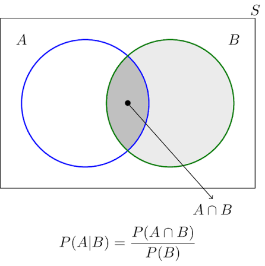
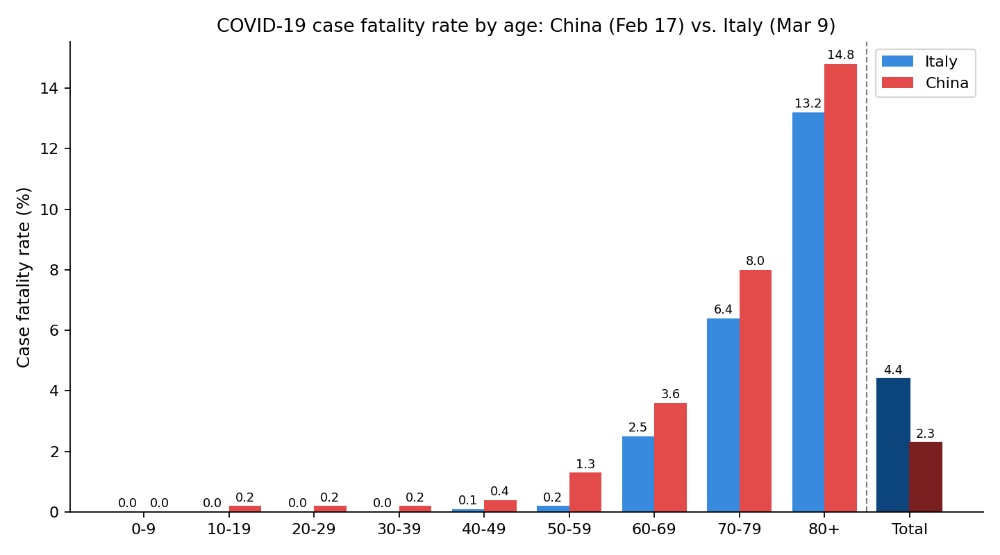

Contents
- Introducing Conditional Probability
- Motivation: accounting for new information
- Two-children family example; formal definition
- Two Dice Example
- \(P(A\mid B)\) vs. \(P(B\mid A)\) — why they differ
- Bayes’ Rule
- Law of Total Probability
- Proof (n=2); Two Bins example
- Bayes’ Rule + LOTP combined: Testing for a Disease
- Independence
- Definition; Two Cards example (non-independence)
- When independence is a reasonable assumption
- The Monty Hall Problem
- Solving via LOTP; generalization to 1000 doors
- Simpson’s Paradox
- COVID-19 case fatality rates (China vs. Italy)
- Conditioning as a Tool: Sequential Battle
- Brute-force (geometric series) vs. conditioning (system of equations)
Conditional probability
How do we account for (new) information?
- What are my chances to pass this course?
- given that I am a math major?
- given that I am retaking it?
- given that I am Aries?
- What is the probability that a worker makes over 1 mln KZT per month?
- given she works in Astana?
- given she is in Finace?
- given she is NU graduate?
Example: Two-children family
A family has two children.
What is the probability that it has at least one boy (event A)?
What is the probability that it has at least one boy, given that it has at least one girl (event B)?
Hence, we get:
- \(P(A)=750/1000=0.75\)
- \(P(\text{A given B})=500/750\)
- The second probability is called conditional probability of A given B.
- Here even B is the new information we condition upon.
For events \(A\) and \(B\) with \(P(B) > 0\), the conditional probability of \(A\) given \(B\) is \[ P(A \mid B) = \frac{P(A \cap B)}{P(B)}. \]
- \(A\): the event whose probability we’re updating
- \(B\): the evidence — what we observe / treat as given
- Requires \(P(B) > 0\): can’t condition on an impossible event
- \(P(A)\) is called a prior probability.
- \(P(A|B)\) is called a posterior probability.
Matches what we just found: \[ P(A \mid B) = \frac{500/1000}{750/1000} = \frac{500}{750} \]

Example: two dice
Roll two fair dice. Let
- \(A\) = at least one die shows 6
- \(B\) = the sum is 8
Find \(P(A\mid B)\) and \(P(B\mid A)\), interpret.
Start from the definition:
\[P(A \mid B) = \frac{P(A \cap B)}{P(B)}.\] \[P(B \mid A) = \frac{P(A \cap B)}{P(A)}.\]
We use the definition we need:
- \(|S|\)
- \(|A \cap B|\)
- \(|B|\) and \(|A|\)
Sample space: \(S = \{(i,j) : i,j \in \{1,\dots,6\}\}\), 36 equally likely outcomes.
Listing \(A\)
\[A = \{(1,6),(2,6),(3,6),(4,6),(5,6),\dots\}\]
\[|A| = 11 \qquad P(A) = \frac{11}{36}\]
How to count quickly?
Listing \(B\)
\[B = \{(2,6),(3,5),(4,4),(5,3),(6,2)\}\]
\[|B| = 5 \qquad P(B) = \frac{5}{36}\]
Finding \(A \cap B\)
Scan \(B\)’s five outcomes for the ones that also have a 6:
\[B = \{\color{#2980b9}{(2,6)},(3,5),(4,4),(5,3),\color{#2980b9}{(6,2)}\}\]
\[A \cap B = \{(2,6),(6,2)\} \qquad |A\cap B| = 2 \qquad P(A\cap B) = \frac{2}{36}\]
\(P(A \mid B)\): given the sum is 8
\[P(A\mid B) = \frac{P(A\cap B)}{P(B)} = \frac{2/36}{5/36} = \frac{2}{5}\]
Same thing directly: restrict to \(B\)’s 5 equally likely outcomes, 2 of them are also in \(A\) \(\to \dfrac{2}{5}\).
\(P(B \mid A)\): given at least one 6
\[P(B\mid A) = \frac{P(A\cap B)}{P(A)} = \frac{2/36}{11/36} = \frac{2}{11}\]
Restrict to \(A\)’s 11 equally likely outcomes, 2 of them also sum to 8 \(\to \dfrac{2}{11}\).
\(P(A\mid B) \neq P(B\mid A)\) generally. Which event you condition on determines which sample space you restrict to.
Another example \(P(A|B)\neq P(B|A)\).
- Imagine a fire alarm so sensetive that it goes off often
- If there is a fire, alarm rings
- But also often rings when there is no fire
- Here \(P(F|A)\) can be low, but \(P(A|F)\) is high
- Cook up the numbers to demonstrate? What must be the condition for this to be true?
Bayes’ rule
For events \(A, B\) with \(P(A), P(B) > 0\): \[ P(A \mid B) = \frac{P(B \mid A)\, P(A)}{P(B)} \]
Derivation. Apply the definition of conditional probability twice to the same intersection: \[ P(A \cap B) = P(A \mid B)\,P(B) = P(B \mid A)\,P(A) \]
Divide through by \(P(B)\) or \(P(A\)):
Bayes’ rule connects two conditional probabilities. Hence, useful when you know one, not the other.
Law of Total Probability
Let \(A_1, \dots, A_n\) be a partition of the sample space \(S\) (disjoint events with \(A_1\cup\cdots\cup A_n = S\)), each with \(P(A_i) > 0\). Then for any event \(B\): \[ P(B) = \sum_{i=1}^n P(B \mid A_i)\,P(A_i) \]
Idea: \(P(B)\) is given by the weighted average of \(B\)’s conditional probabilities given \(A_i\)s, where weights are probabilities of corresponding partitioning sets.
Often paired with Bayes’ rule: LOTP builds the denominator \(P(B)\) that Bayes’ rule needs.
Proof of LOTP (\(n=2\))
Partition: \(A_1\) and \(A_2 = A_1^c\), so \(A_1\cap A_2=\varnothing\) and \(A_1\cup A_2 = S\).
Step 1 — express \(B\) as a union of its pieces inside each \(A_i\).
Since \(A_1\cup A_2 = S \supseteq B\), every outcome in \(B\) lies in exactly one of \(A_1\) or \(A_2\): \[ B = (B \cap A_1) \cup (B \cap A_2) \]
\(B\cap A_1\) and \(B\cap A_2\) are disjoint (since \(A_1\cap A_2=\varnothing\)), so by the second axiom of probability: \[ P(B) = P(B\cap A_1) + P(B\cap A_2) \]
Step 2 — use, \(P(B\cap A_i) = P(B\mid A_i)\,P(A_i)\): \[ P(B) = P(B\mid A_1)P(A_1) + P(B\mid A_2)P(A_2) \]
\(B\) splits along the \(A_1/A_2\) boundary into two disjoint pieces:
- Dashed line = the \(A_1/A_2\) partition boundary.
- The two shaded lobes of \(B\) are disjoint by construction, so their probabilities add: \(P(B) = P(B\cap A_1)+P(B\cap A_2)\), and each equals \(P(B\mid A_i)P(A_i)\) by the definition of conditional probability.
Example: Two Bins
- Bin 1: 2 red balls, 1 blue ball
- Bin 2: 2 red balls, 2 blue balls
Pick one of the two bins uniformly at random, then draw one ball uniformly at random from the chosen bin.
- What is the probability that the ball drawn is blue?
- Given that the ball is blue, what is the probability that Bin 1 was chosen?
Probability of blue ball We know conditional probabilities of drawing a blue ball given which bin was chosen, and the probabilities of choosing each bin.
- Let \(A_1\) = “Bin 1 chosen”,
- Let \(A_2\) = “Bin 2 chosen”, and
- \(B\) = “ball drawn is blue”. We are given:
Bin choice probabilities: \[P(A_1) = P(A_2) = \frac12\]
Conditional probabilities: \[P(B\mid A_1) = \frac13, \qquad P(B\mid A_2) = \frac{2}{4} = \frac12\]
Apply LOTP:
\[ \begin{aligned} P(B) &= P(B\mid A_1)P(A_1) + P(B\mid A_2)P(A_2) \\ &= \frac13\cdot\frac12 + \frac12\cdot\frac12 \\ &= \frac{5}{12} \approx 0.417 \end{aligned} \]
Conditional probability of Bin 1 given blue We know one conditional probability, \(P(B\mid A_1)\), and want to find reverse \(P(A_1\mid B)\).
\[ P(A_1 \mid B) = \dfrac{P(B\mid A_1)\,P(A_1)}{P(B)} \]
- \(P(B\mid A_1)=\dfrac13\)
- \(P(A_1)=\dfrac12\)
- \(P(B)=\dfrac{5}{12}\)
\[ \color{red}{= \dfrac{\frac13\cdot\frac12}{\frac{5}{12}} \approx 0.4} \]
After observing a blue ball, the prior \(P(A_1)=0.5\) dropped to posterior \(P(A_1\mid B)=0.4\).
- Hence, seeing a blue ball is evidence against Bin 1. Why?
- Bin 1 has a smaller share of blue balls than Bin 2 does.
- Question: Can you guess how things change upon observing a red ball instead? Explain intuition and do the computations.
- Question: Imagine drawing two balls instead, with replacement (draw once, put back, draw again).
- What is the probability that both are blue?
- Given both are blue, what is the probability that Bin 1 was chosen?
Testing for a Disease
A patient is tested for some disease. Let:
- \(D\) = the event the patient has the disease
- \(D^c\) = the event the patient does not have the disease
- \(T\) = the event the test comes back positive
- \(T^c\) = the event the test comes back negative
- The test is a noisy signal about \(D\) — it doesn’t perfectly reveal the truth, and it can be wrong in two different ways.
- Which ways?
Two Ways a Test Can Be Wrong
False positive: test says positive, but the patient doesn’t have the disease — event \(T \cap D^c\).
False negative: test says negative, but the patient does have the disease — event \(T^c \cap D\).
| \(D\) (disease) | \(D^c\) (no disease) | |
|---|---|---|
| \(T\) (test +) | correct | false positive |
| \(T^c\) (test −) | false negative | correct |
Test Accuracy: Sensitivity & Specificity
Avoiding each type of mistake is exactly what the two standard accuracy measures capture:
- Sensitivity (true positive rate): \(P(T \mid D)\) — chance of testing positive given disease
- Specificity (true negative rate): \(P(T^c \mid D^c)\) — chance of testing negative given no disease
Example: COVID-19 rapid antigen test, symptomatic patients (Cochrane meta-analysis, ~150,000 samples): \[ \text{Sensitivity} \approx 0.73 \ (73.0\%), \qquad \text{Specificity} \approx 0.99 \ (99.1\%) \]
Accuracy is two numbers, not one!
Sensitivity and specificity answer: given the true disease status, what does the test say?
But a patient taking the test doesn’t know their true status — they only see the test result. What they actually want is the reverse:
Given a positive test result, what is the probability of actually having the disease? \[ P(D \mid T) = \, ? \]
This is not the sensitivity — \(P(D\mid T) \neq P(T\mid D)\). We need to flip the conditioning.
Step 1. Apply Bayes’ rule: \[ P(D\mid T) = \frac{P(T\mid D)\,P(D)}{P(T)} \]
Step 2. To find \(P(T)\), expand it with LOTP, partitioning on \(D, D^c\): \[ P(T) = P(T\mid D)P(D) + P(T\mid D^c)P(D^c) \]
Note \(P(T\mid D^c) = 1-\text{specificity}\) (the false-positive rate).
Step 3. Combine: \[ P(D\mid T) = \frac{\text{sensitivity}\cdot P(D)}{\text{sensitivity}\cdot P(D) + (1-\text{specificity})\cdot P(D^c)} \]
Three ingredients: sensitivity, specificity, and \(P(D)\) — the disease’s prevalence. Same formula for any test, any disease.
Numerical Example
Take \(P(D) = 0.01\), sensitivity \(= 0.73\), specificity \(= 0.99\):
\[ \begin{align*} P(D\mid T) &= \frac{0.73 \times 0.01}{0.73\times 0.01 + 0.01\times 0.99} \\[6pt] &= \frac{0.0073}{0.0073+0.0099} \\[6pt] &= \frac{0.0073}{0.0172} \\[6pt] &\approx 0.424 \end{align*} \]
Even with a positive test, there’s only about a 42% chance of actually having COVID.
P(disease | test +)
16.1%
Test + total
59
Of those, false alarms
Independence
Flip a fair coin 100 times, get 100 heads. What’s the probability the next flip is heads?
Two bins, draw a ball. Ball turns out blue. Does that change your belief about which bin was chosen?
COVID test. Result comes back positive. Does that change your belief about having the disease?
Events are independent if knowing one does not change our estimate of the probability of the other.
Events \(A\) and \(B\) are independent if \[ P(A \cap B) = P(A)\,P(B) \]
If \(P(A)>0\) and \(P(B)>0\), this is equivalent to each of: \[ P(A \mid B) = P(A) \qquad \Longleftrightarrow \qquad P(B \mid A) = P(B) \]
- Multiply Probabilities
- Posterior = Prior (new information does not affect our estimates)
Two Cards
Draw two cards without replacement from a standard 52-card deck.
- Let \(A\) = “first card is an ace”,
- Let \(B\) = “second card is an ace”.
- Independent?
Intuition:
No, because if first is an Ace, then there are one fewer aces left in the pile, so second does not have the same probability.
To formally check this use the definition.
We check if \(P(A\cap B)=P(A)P(B)\). By naive definition:
\[ P(A) = \frac{4}{52} \]
By symmetry, every position in the deck is equally likely to hold any given card, so \(P(B) = P(A)\).
Now for the right hand side: \[ P(A \cap B) = \frac{\binom{4}{2}}{\binom{52}{2}} = \frac{4\times 3}{52\times 51} \]
Not independent since: \[ \frac{4 \times 3}{52 \times 51} \neq (\frac{4}{52})^2 \]
Question: check that the independence definition using the conditional probability also does not hold:
\[ P(A \mid B) \neq \frac{P(A \cap B)}{P(B)} \]
Independence is useful as a simplifying assumption:
- Fair coin flips are assumed independent: there is no any physical reason for one flip to affect the next.
- Sexes of children are often assumed independent: in reality a child was more likely to be of the same sex as its preceding sibling, but the effect is small enough to be ignored in most models.
But it is not always a good assumption:
- Possibility of biased coin: what if there is a chance that a coin I flip is biased? Then the flips are not independent!
- Hot Hand: do basketball players really have “hot streaks,” or is a made shot independent of the shots before it? Empirical question.
Question: During a single contact a virus is transmitted from an infected to a healthy person with probability \(p>0\). Assume that the transmissions are independent across contacts.
- What is the probability of getting infected after 3 contacts with infected individuals?
- What is the probability of getting infected after 3 contacts, where each contact is with an individual who is infected with probability \(q>0\), independently, and transmission occurs with probability \(p\) if the contact individual is infected?
- Suppose that after 3 contacts, each of whom is infected with probability \(q>0\) independently, Alice is not infected. Given that Alice is not infected, what is the probability that neither of Alice’s contacts was infected?
The Monty Hall Problem
Setup. Three doors. One hides a car, two hide goats. You pick a door. The host — who knows what’s behind every door — opens one of the other two, always revealing a goat, and offers you the chance to switch to the remaining closed door.
Question. Should you switch?
Precise assumptions (these matter — see below):
- The car is placed uniformly at random among the 3 doors.
- The host always opens a door you didn’t pick, and it always has a goat.
- The host always offers the switch, regardless of what you initially chose.
| Strategy | Games | Wins | Win rate |
|---|---|---|---|
| Switched | 0 | 0 | – |
| Kept | 0 | 0 | – |
| Total | 0 | 0 | – |
Switching wins the car with probability \(2/3\), while keeping wins with probability \(1/3\).
Brief History
- The problem is named after Monty Hall, longtime host of the game show Let’s Make a Deal — though the idealized “always reveal a goat, always offer a switch” rule isn’t quite how the real show worked. Hall himself later noted he had freedom to not offer the switch, using it as a psychological tool against contestants who seemed to have guessed right.
- The puzzle exploded into public view when Marilyn vos Savant answered a reader’s letter in her Parade magazine column (Sept. 9, 1990): switch, and you double your odds.
- The reaction: an estimated 10,000+ letters, many from PhDs and professional mathematicians, confidently telling her she was wrong.
Solving It: Law of Total Probability
WLOG say you pick Door 1. Let
- \(W\) = you win the car by switching
- \(A_i\) = car is hidden behind Door \(i\)
\(\{A_1, A_2, A_3\}\) partitions the sample space, with \(P(A_i) = 1/3\) each. By LOTP: \[ P(W) = \sum_{i=1}^{3} P(W\mid A_i)\,P(A_i) \]
Now lets compute \(P(W\mid A_i)\) for each \(i\):
- \(A_1\) (you were already right): the host opens one of the two goat doors; switching moves you off the car. \(P(W\mid A_1) = 0\).
- \(A_2\) (car is behind Door 2): the host can’t open Door 1 (your pick) or Door 2 (has the car) — he’s forced to open Door 3. Switching takes you to Door 2. \(P(W\mid A_2) = 1\).
- \(A_3\) (car is behind Door 3): symmetric argument — the host is forced to open Door 2, and switching takes you to Door 3. \(P(W\mid A_3) = 1\).
\[ P(W) = 0\cdot\frac13 \;+\; 1\cdot\frac13 \;+\; 1\cdot\frac13 \;=\; \boxed{\frac23} \]
Same Question, 1000 Doors
You pick 1 door out of 1000. The host — who knows where the car is — opens 998 of the other 999 doors, every single one revealing a goat, leaving exactly one other door closed. Switch?
Same argument, same partition. Let \(A_i\) = car is behind Door \(i\) (your initial pick), \(P(A_i) = \dfrac{1}{1000}\) for each \(i\).
- You were right initially (\(P = \frac{1}{1000}\)): switching loses.
- You were wrong initially (\(P = \frac{999}{1000}\)): the host was forced to open every wrong door except one — leaving the car sitting behind that single surviving door. Switching wins almost for sure.
\[ P(W) = 0\cdot\frac{1}{1000} + 1\cdot\frac{999}{1000} = \boxed{\frac{999}{1000}} \]
Your first pick was almost certainly wrong. The host, forced to avoid the car while emptying out 998 doors, has effectively filtered 999 doors down to the one most likely to hide the car — and handed it to you.
Simpson’s Paradox in COVID-19 Case Fatality Rates

CFR is the proportion of confirmed cases of a disease that result in death.
Comparing early COVID-19 CFR — China (Feb 17, 2020) vs. Italy (Mar 9, 2020), von Kügelgen, Gresele & Schölkopf (2021):
- In every single age group, Italy’s CFR is lower than China’s.
- Overall, Italy’s CFR (4.4%) is higher than China’s (2.3%).
How can this be?
Italy population is older than China’s.
- Italy is one of the world’s oldest populations — a quarter of Italians are already 65+, while in China this fraction is below 15%
- Older people are more likely to die from COVID-19, so Italy’s overall CFR is higher even though its age-specific CFRs are lower.
The Paradox in the Language of Conditional Probability
Let:
- \(D\) = case results in death,
- \(Y\) = patient is young,
- \(C\) = patient is in China:
Within each age group, Italy does better: \[ P(D \mid Y, C^c) < P(D \mid Y, C) \qquad P(D \mid Y^c, C^c) < P(D \mid Y^c, C) \]
Yet overall, Italy does worse: \[ P(D \mid C^c) > P(D \mid C) \]
Abstract numerical example of Simpson’s Paradox
Using conditioning as a tool: sequential battle
Alice and Bob play a game. Alice has 2 soldiers, Bob 1 soldier. Each round they toss a coin and the winner of the toss takes one soldier from the loser. Rounds are independent and repeat until one player has no soldiers left.
What is the probability that Alice wins the game?
- Each state can be represented as a pair \((a,b)\) where \(a\) is the number of soldiers Alice has and \(b\) is the number of soldiers Bob has.
- Conditional on being in state \((a,b)\), the next state is either \((a+1,b-1)\) or \((a-1,b+1)\) with equal probability (we can let probability depend on the state).
Brute force solution: enumerate all possible sequences
- Alice can win the game in many ways, cach way corresponding to a sequence of individual round outcomes
- Probability that Alice wins = sum of probabilities of all sequences that lead to her winning
- To find probabilities of individual sequences, multiply the probabilities of individual round outcomes because the rounds are independent.
Way 1 — win immediately: \((2,1)\to(3,0)\) \[ P = \frac{1}{2} \]
Way 2 — one bounce: \((2,1)\to(1,2)\to(2,1)\to(3,0)\) \[ P = \underbrace{\frac12}_{\text{Bob wins}}\cdot\underbrace{\frac12}_{\text{Alice wins}}\cdot\underbrace{\frac12}_{\text{Alice wins}} = \frac{1}{8} \]
Way 3 — two bounces: \((2,1)\to(1,2)\to(2,1)\to(1,2)\to(2,1)\to(3,0)\) \[ P = \left(\frac12\cdot\frac12\right)^2\cdot\frac12 = \frac{1}{32} \]
Summing the geometric series: \[ P(\text{Alice wins}) = \frac12\sum_{n=0}^{\infty}\left(\frac14\right)^n = \frac12\cdot\frac{1}{1-\frac14} = \frac12\cdot\frac43 = \frac23 \]
Quick Derivation: Sum of a Geometric Series
Let \(S = \displaystyle\sum_{n=0}^{\infty} r^n = 1 + r + r^2 + r^3 + \cdots\), for \(|r|<1\).
Multiply both sides by \(r\): \[ rS = r + r^2 + r^3 + \cdots \]
Subtract — everything but the leading \(1\) cancels: \[ S - rS = 1 \quad\Longrightarrow\quad S(1-r) = 1 \]
\[ \boxed{S = \sum_{n=0}^{\infty} r^n = \frac{1}{1-r}} \]
Conditioning: A System of Equations
Let \(p(s)\) = probability Alice wins given she currently has \(s\) soldiers (total \(=3\)). Condition on the outcome of the next round:
\[ p(1) = \frac12\, p(2) + \frac12\, p(0) \qquad\qquad p(2) = \frac12\, p(3) + \frac12\, p(1) \]
Using the boundary values \(p(0)=0\), \(p(3)=1\): \[ p(1) = \frac12\, p(2) \qquad\qquad p(2) = \frac12 + \frac12\, p(1) \]
Substitute the first equation into the second: \[ p(2) = \frac12 + \frac12\left(\frac12\, p(2)\right) = \frac12 + \frac14\, p(2) \]
\[ \frac34\, p(2) = \frac12 \quad\Longrightarrow\quad p(2) = \frac{2}{3} \]
\[ p(1) = \frac12\, p(2) = \frac{1}{3} \]
Same answer as the geometric series, no infinite sum needed: two unknowns, two linear equations, solved directly. This is the general pattern — conditioning on one step always turns an infinite-path problem into a small system of linear equations.
Practice: Change the Numbers, Change the Rule
(a) Alice starts with 3 soldiers, Bob with 1 (so \(N=4\)). Each round is a fair coin flip (\(p=\frac12\) regardless of soldier counts). First see that enumerating all ways to win is more difficult.Set up the system of equations by conditioning on the first step, and solve for \(P(\text{Alice wins})\).
(b) Assume that a player with \(k\) soldiers beats an opponent with \(\ell\) soldiers with probability \(\dfrac{k}{k+\ell}\). Using the same \(3\) vs. \(1\) starting point, set up and solve the corresponding system for \(P(\text{Alice wins})\).